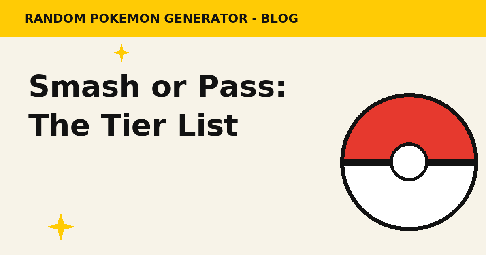

Pokemon Smash or Pass Tier List: The Ultimate Ranking
The three-question judging standard, the full S-to-D tier board — Lucario and Mimikyu at the top, Luvdisc and Unown in the basement — and the five decisions nobody can make quickly: Pikachu, Eevee, Gardevoir, Ditto and Magikarp. Come argue with the list, then run a session and build your own.
Read the guide →